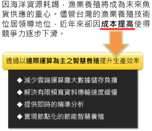
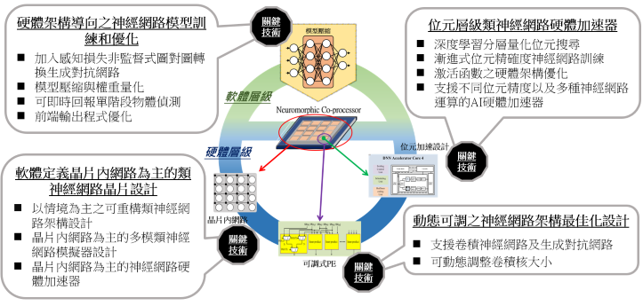

Overall Goal and Application Scenario
 邊際運算之水下養殖監控系統
本計畫總體目標及應用情境是建構一個邊際運算之智慧型水下養殖監控系統，提高業者產能、降低成本 此系統是由一個太陽能供電之整合型感測模組組成，包括水下攝影機和各種sensors系統，即時蒐集並處理水下資料 透過我們團隊設計的情境感知動態可調的AI晶片，執行影像強化、物件偵測追蹤等運算，將處理後之資訊，如生物數量、健康情況，水質等，呈現在養殖業者之手持裝置上。 此系統的主要特色是 (a) 多模運算 (b)即時偵測 (c)低耗能 展示內容依使用者界面和各核心技術來呈現。